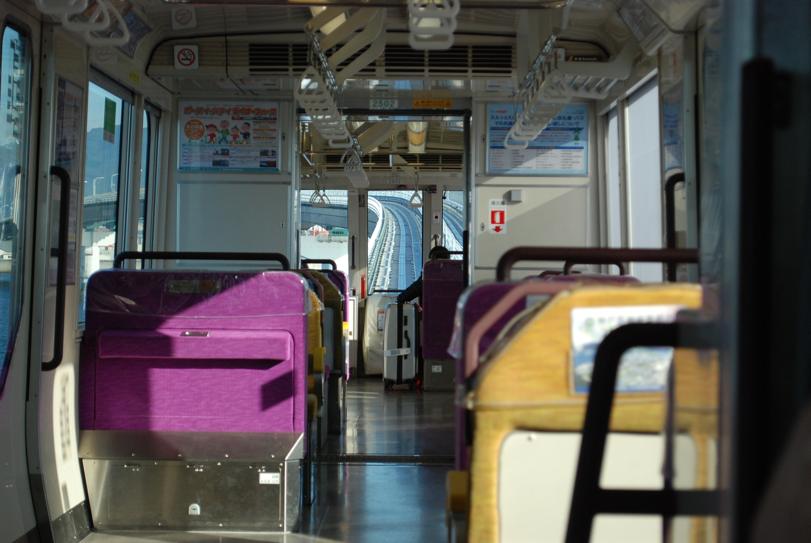

Home
Contact
My dog
Welcome to Japan
Budget (All prices in USD)
How much did I spend in Japan broken down here:
Airfare: $800 -- $600 LAX
KIX * DFW
LAX $200
Airchina (LAX to HND for the price it was a good flight, but the people in front of me would constantly lean back and the 31 inch leg room was nothing after that.
Food on the plane was basic: chicken/beef and rice with some sides like fruit and a cookie.) Delta and American Airline (DFW to LAX was great both flights were comfortable and very new airliners. Updated games on the screen made for a quick flight.)
Flying with a budget airline wasn't bad, but I would do direct from now on because going through China was a hassle on my trip.
Accomadation: $315 -- Sharing cheap 3✪ hotels with 2 friends brought this down. Airbnb is another option although Japan has cracked down a bit on it so be careful where you choose (always within a short walk to a train station!)
Food: $270 -- $30 a day is a great amount for breakfast, lunch and dinner with some room to spare for other stuff you may find interesting. You may spend a lot less if you eat out only half the time, but where's the fun in that?
Entertainment: $50 -- random stuff like shrines and temples that require entrance fees.
Random spending: $100 -- gifts for yourself, souvenirs for your friends and family. Remember to get them something too!
Transportation: $120 -- to get around everywhere you may not need a JR pass, we didn't, but look into one if you need it.
Arrival // Day 1
After our long flights over the Pacific Ocean and a brief stop at Beijing we received a free shuttle to karaksa Spring
hotel. We woke up early in the morning for the very enjoyable western and japanese breakfast, and got ready for the
ferry to Kobe.
Kobe // Day 2

The quickest and a unique way instead of the train was to take the 500 yen ferry from Kansai airport to Kobe airport.
From there we had to take the Portliner then a short walk to Hanshin line for our hotel at Sunroute Sopra Kobe Annesso. After
40 minutes on the train we wandered the area.
Kyoto // Days 3-7
We spent a lot of time in Kyoto and one of the coolest experiences was the Jidai Matsuri festival. When we first got to
Kyoto though we settled in at the nearby area and our hotel Seibido Inn. Renting bikes and taking quick ganders around Kyoto
Imperial Palace, as well as checking out arcades was the start of a few days for us.
Obviously there was a lot of good food to be had we tried a lot of places like: Yakiniku Hiro, Tenkaippin Ramen,
and Avocado (Mexican restaraunt in japan). Trying out convenience store food or food stalls was usually how we kicked off
breakfast. Places like Lawson's, Food Mart, and 7-Eleven were all great and had a lot more healthy food.
// If you're looking for milk like we were it was 牛乳 (Gyūnyū) and not ミルク (miruku) the difference was that miruku was
generally a milk-based drink and not really milk. //
[
Japan Rail Pass
]